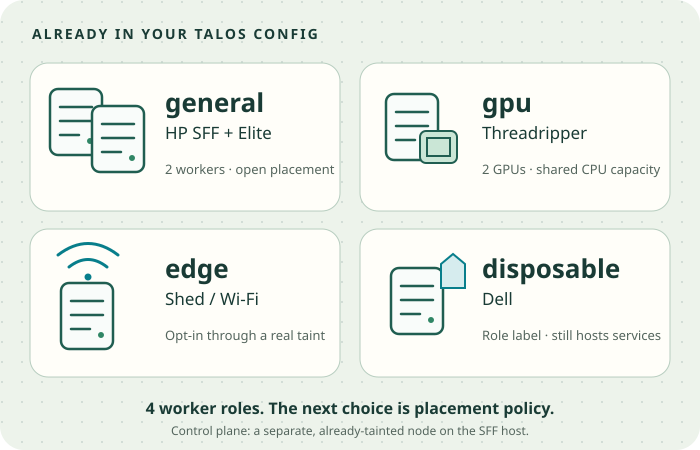

Already doing it
Argo self-management, ApplicationSets, Kustomize, external secrets, physical-host zones, GPU requests and a protected Wi-Fi worker.
Your homelab → your work practice
You already have the pools. The next step is making selected placement and delivery rules more deliberate.
Keep the lab understandable. Use the systems you already run to practice the decisions that matter at work.
About 4 minutes to skim · 15–20 minutes with details
Audit and recommendations. No deployment changes.

KEEP THE LAB LIVABLE ✦Your existing design is the foundation. Improve a few rules where they create useful work practice.
Argo self-management, ApplicationSets, Kustomize, external secrets, physical-host zones, GPU requests and a protected Wi-Fi worker.
Most core services and telemetry backends do not yet select a workload pool. Their labels describe roles, while placement remains mostly shared.
Choose placement for a small set of services. Then use one stateless app to practice overlays, promotion and meaningful checks.
Your constraint guides this report: realistic work practice, with a homelab that stays easy to operate. Every recommendation is optional. Extra clusters, repositories and controllers need a specific learning benefit.
e32190777.The complete private evidence lives in the three local Mink audit notes recorded during this conversation. This report carries forward the corrections from later checks.
The active Omni template and live workers agree. The question is how much of that intent the scheduler should enforce.
Ordinary services and selected state. No pool taint. Other workloads can use these nodes.
Candidate home for core services.vLLM requests both GPU devices. The node has no taint; Argo and ordinary CPU apps also run here.
GPU-capable can still mean mixed use.A real Wi-Fi taint makes new placement opt-in. Intercept selects its radio and tolerates that taint.
Already an enforced boundary.The label expresses intent. The node still hosts infrastructure and apps; its label does not make their state disposable.
Classify existing work before restricting it.Verified in the Omni template and read-only live checks on September 20.
The practical recommendation: keep these four roles. Consider placing core controllers and telemetry backends on the two general workers, while node agents continue observing all relevant nodes. Check capacity and storage dependencies before making placement mandatory.
node.vanillax.dev/pool=general
Selectors choose eligible nodes. Taints keep workloads out unless they tolerate them. Preferences allow fallback.
topology.kubernetes.io/zone=hp-sff
Replica spread uses these domains. The SFF control-plane VM and worker VM share one physical host, so they share one zone.
Move the slider. Two replicas can use only two of three domains.
Illustrative balanced placement with maxSkew 1 and enough capacity. Excluding a domain models a changed eligible set, not automatic or instant outage recovery. Live scheduling also depends on constraints, volume access and capacity.
Three replicas. Required physical-zone spread. A preferred general-pool placement. A disruption budget allowing one unavailable replica.
The current manifest uses DoNotSchedule. The scheduling guide’s older “soft spread” wording is stale.
Argo currently occupies GPU, Elite and SFF workers. OTel and other core services lack pool-specific rules. A migration needs room on the remaining hosts.
Pod movement does not relocate Longhorn replicas. GPU/Dell taints should follow a workload and storage inventory.
NoSchedule does not evict existing Pods.minAvailable: 1 can block a drain.Practice identity, ownership and promotion without replacing the platform you already understand.
A bootstrap script seeds Argo. The root Application discovers child Applications and ApplicationSets. Argo then manages its own configuration.
The root seed stays external. Your directory-based discovery, strict templates and existing CI are useful foundations.
Terraform prepares GKE. GitHub Actions uses federated identity and Helmfile to install Argo core plus a bootstrap chart. Argo discovers the workloads.
Both models have a clear owner. A second reconciler managing the same settings can create conflicts.
Provision nodes and apply their labels and machine configuration.
Seed Gateway API CRDs, Cilium and 1Password access.
The existing script installs Argo and hands control to GitOps.
Network, IAM, GKE, fleet and managed prerequisites.
Short-lived Google access through Connect Gateway; install core and bootstrap.
Argo uses its Git identity and cluster metadata to discover targets.
Two important boundaries: Connect Gateway provides Kubernetes API access; Gateway API provides application routing. Ordering Helm releases does not by itself prove secret readiness.
Some cloud ingress setup crosses owners: Terraform prepares addresses, Argo creates a Gateway, Terraform attaches cloud networking, and Argo advertises the endpoint. A bootstrap checklist should capture those dependencies.
Choose a layer. A cluster label, a node label and an Argo ownership marker are different controls.
Work explicitly represents the local cluster as an Argo Secret. Its labels supply cluster name, environment and platform to the ApplicationSet generator.
The label example above is illustrative. A local cluster Secret becomes especially useful when you adopt cluster-driven discovery or a second cluster.
A Matrix generator combines cluster metadata with Git target files. The path selects the configuration for that cluster; the Application still targets in-cluster. The examined pattern is one local Argo per cluster.
cluster-name: lab-talos-home
↓
deploy-targets/lab-talos-home/<app-environment>/
↓
Application → local clusterA nonprod cluster can host several application environments. A second namespace teaches environment configuration; a second cluster adds a separate cluster boundary.
Changing discovery labels or paths can add and remove generated Applications. Preserve ownership and inspect the rendered before/after inventory. The implicit local cluster has no labeled Secret to supply this metadata.
Use a stateless demo to separate shared configuration from environment choices. Practice changing replicas, a hostname and an immutable image version.
practice-app/
base/
overlays/
lab/
stable/Illustrative layout. Integrate discovery deliberately; moving existing directories can change Argo ownership. Start with two namespaces if that is enough for the exercise.
Deploy an image digest to the lab target. Check a real service response. Promote the same digest by PR. Revert the target change to practice rollback.
main/HEAD can affect both targets. Gate a manifest revision too if the exercise needs to freeze all configuration.A PostSync smoke test can detect a bad deployment. It does not automatically undo it, and selective sync skips hooks.
allowEmpty: false is not a general deletion lock.Waves and hooksApplicationSet deletionKustomize bases and overlays
Home already separates secret references from values. Your next useful lesson is who may read a secret, how it rotates, and whether the application reloads it.
Both routes materialize Kubernetes Secrets. Work’s federated identity removes a static Google account key; authorization scope and application credential handling still matter.
repo-creds can serve matching repository URL prefixes if private Git access is a useful exercise.Managed secret synchronization and automatic rotation are separate settings in GKE. Referencing “latest” does not prove periodic refresh or application reload. Talos does not reproduce GKE IAM automatically.
Copy a useful engineering decision. Keep its cost and operational assumptions visible.
| Pattern | Work configuration reviewed | Useful home equivalent |
|---|---|---|
| Capacity boundaries | Protected infra pool for core + OTel backends. A separate standard class for apps. | Build placement rules around general, gpu, edge and disposable. A third telemetry pool needs a reason. |
| Failure domains | Regional GKE; module defaults select three node zones. Infra bounds are per zone. | Use existing physical-host zones and replica spread. Keep shared home dependencies explicit. |
| Deployment targets | Cluster labels and Git files select environment-specific overlays. | One pilot base with lab/stable overlays. Expand discovery only when it is useful. |
| Credentials & ownership | Federated CI access, workload identity, managed secret sync, GitHub App credentials. | Keep 1Password/ESO. Make bootstrap identity, access and rotation understandable. |
| Upgrade promotion | Nonprod fleet upgrades first, followed by a seven-day soak before prod. | When a lab cluster exists, validate Talos/Kubernetes upgrades there before the stable cluster. |
The reviewed Terragrunt entries lead through a versioned organization module to Google’s regional GKE module. The configuration includes private control-plane access, node auto-repair/upgrade, fleet registration, KMS-backed encryption and managed prerequisites.
Three zones is source-derived. The wrapper does not specify zone letters; the upstream module chooses three available zones. The infra pool declares 1–2 nodes per zone, implying 3–6 infra workers under that topology. Separate app capacity can grow through ComputeClass node-pool auto-creation.
The standard class declares machine-family fallbacks and consolidation. Namespace labels choose its default for new Pods in GKE. Copying that namespace label onto Talos does not install the GKE behavior.
The GKE wrapper permits an upstream 44.x version range; public defaults were inspected, but the deployed resolved module was not. Resource caps are not a cloud spending budget.
The intended topic was workload isolation as well as zone spread. The initial summary gave isolation too little attention.
Rechecking the source found core infrastructure and OTel gateways/scrapers explicitly selecting the same infra class. PoC/app namespaces select the standard class. Node telemetry agents are DaemonSets intended to observe across nodes; their live coverage was not verified.
This establishes two capacity groups in the reviewed configuration. Separate telemetry nodes may be a future design, but the inspected selectors do not establish that third boundary.
Your home already has four role groups. Adding a new pool system would miss the existing design; the useful work is deciding which services consume those roles.
applicationSet.enabled: false; its Deployment is unconditional. The earlier “missing controller” concern was resolved by rendering.These are source/render observations, not claims of live work outages. Some secret-access bindings were also broader than individual secrets; identity federation alone does not establish least privilege.
The reviewed rollout sequence covers control-plane and node minor/patch upgrades. That does not automatically gate Terraform edits or application image promotion.
At home, a useful later exercise is a lab upgrade with explicit acceptance checks: scheduling, service responses, storage and telemetry. A second cluster is not required for the first overlay or pool-planning exercise.
Keep data recovery, service continuity and pool isolation as separate objectives. A database filesystem backup also does not automatically provide point-in-time recovery.
Your existing multi-cluster roadmap already proposes incremental shared-app adoption. Use it as a future reference; it is not all implemented or all required.
Choose one or two topics. The buttons prepare a message to bring back to the chat; they do not change the cluster.
Nothing is sent automatically.
Choices stay in this browser when local storage is available. No account, network request or deployment is involved.
A reasonable first choice is A: finish the placement map for the pools already in Talos. You can ask for an explanation, a plan, or a focused PR. Picking a topic here makes no deployment decision.
Home configuration links are pinned to the audited revision. Work comparisons summarize reviewed source and renders; private repository names, organizational identities, domains and credentials are not included. Local renderers differed from the declared work CI versions, so successful local rendering is not a substitute for CI or runtime validation.
Detailed evidence is retained locally in Mink under Homelab and enterprise GitOps comparison — September 2026, Work GKE and Argo bootstrap audit — nodes, labels, secrets and home practice, and Existing Talos worker pools and remaining placement policy.